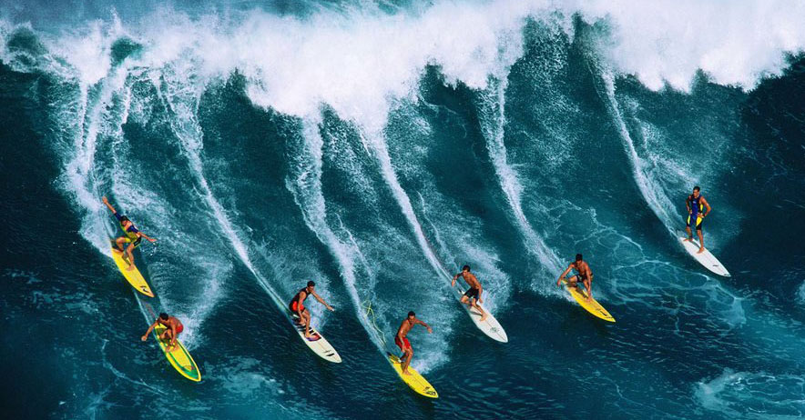
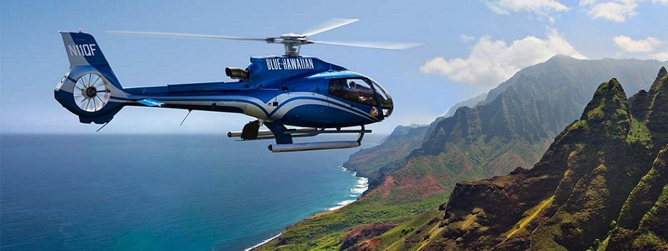
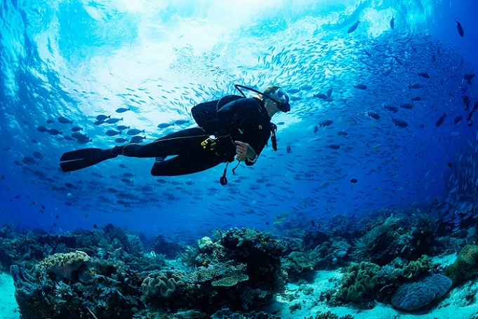
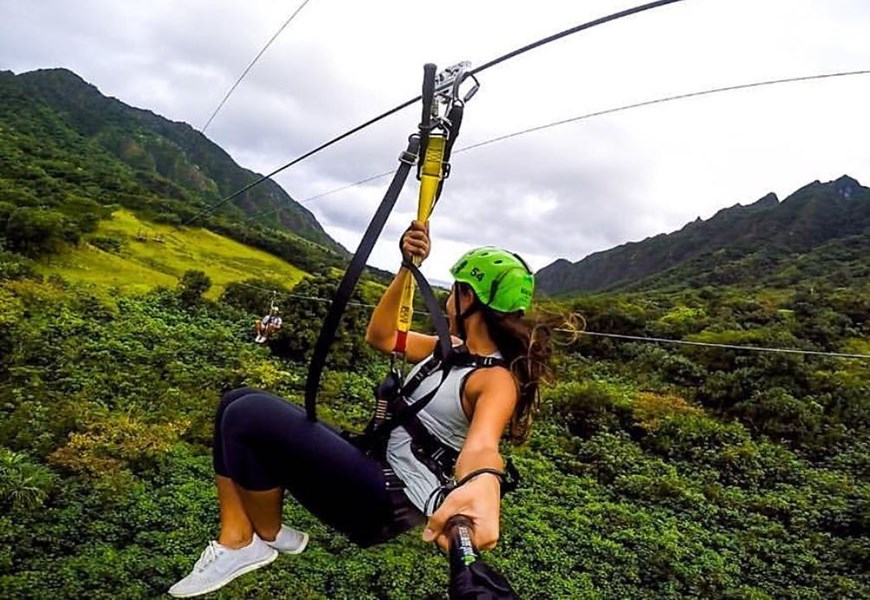

Activities
Hawaii offers you a variety of different extraordinary activities and things you haven't met before. Each of the Hawaiian islands offer you something different and special. I would like to recommend you try these activities because they can become memories that you will remember for all life. Here are some of them.
Surfing
Surfing (source: departures.com)
When you think about Hawaii one of the things that come to your mind is surfing. Surfing was born in Hawaii and is deeply intertwined with its history and culture. If you dream of riding the waves, there’s no better place to learn how to surf and truly commune with the ocean. Almost every island offers surfing lessons where you can learn the basics of the sport. Lessons run from one to two hours and are taught by experienced surfers.
Helicopter tours
BLUE-HAWAIIAN (source: pinterest.com)
Hawaii is full of amazing places but sometimes you can see them better from the air. Is this a problem? Not in Hawaii, because they have honored company Blue Hawaiian helicopters where you can book an exploring trip for you and your family to see more beauty of Hawaii.
Scuba diving
Scuba diving (source: ohanafunhawaii.com)
Do you like exploring new things and have you already explored life in Hawaii? Then don’t forget to explore life under the water! In Hawaii there is a lot of companies that can borrow you all the stuff you will need and show you or take you to some special places where you can see different types of life. Nesting sea turtles and white tip reef sharks are among the most impressive sights you can expect in the waters around Hawaii.
Koloa zipline
Zipline (source: htourshawaii.com)
Do you prefer adrenaline sports and do you want to try something unusual and very special? Do you want to fly through the jungle, soar above the forest and glid across the water? Then you have to try zipline!
Kauai Ultimate Off-Road Ranch Tour

Off-Road Ranch Tour (source: hawaiiactivities.com)
If you like adrenaline and beautiful landscape then this is exactly for you! Go off-roading in Kauai on a 4x4 tour of Kipu Ranch, a historic landscape of mountains, valleys, and the secluded Kipu Kai beach. Follow a guide to reach hidden and remote parts of the private ranch you’ll recognize from movies like Jurassic Park and The Descendants, stopping to take photos at each spot.
by Monika Byrtusová, November 2019